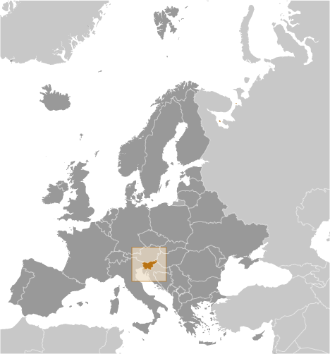
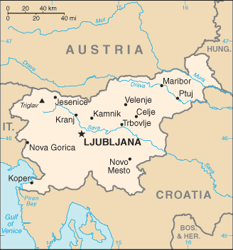
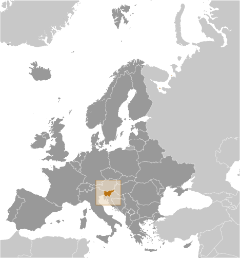
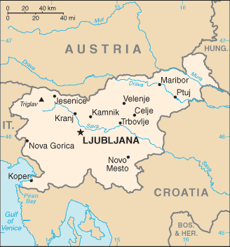

Europe :: SLOVENIA
Introduction :: SLOVENIA
-
The Slovene lands were part of the Austro-Hungarian Empire until the latter's dissolution at the end of World War I. In 1918, the Slovenes joined the Serbs and Croats in forming a new multinational state, which was named Yugoslavia in 1929. After World War II, Slovenia became a republic of the renewed Yugoslavia, which though communist, distanced itself from Moscow's rule. Dissatisfied with the exercise of power by the majority Serbs, the Slovenes succeeded in establishing their independence in 1991 after a short 10-day war. Historical ties to Western Europe, a strong economy, and a stable democracy have assisted in Slovenia's transformation to a modern state. Slovenia acceded to both NATO and the EU in the spring of 2004; it joined the euro zone and the Schengen zone in 2007.
Geography :: SLOVENIA
-
south Central Europe, Julian Alps between Austria and Croatia46 07 N, 14 49 EEuropetotal: 20,273 sq kmland: 20,151 sq kmwater: 122 sq kmcountry comparison to the world: 155slightly smaller than New Jerseytotal: 1,211 kmborder countries (4): Austria 299 km, Croatia 600 km, Hungary 94 km, Italy 218 km46.6 kmterritorial sea: 12 nmMediterranean climate on the coast, continental climate with mild to hot summers and cold winters in the plateaus and valleys to the easta short southwestern coastal strip of Karst topography on the Adriatic; an alpine mountain region lies adjacent to Italy and Austria in the north; mixed mountains and valleys with numerous rivers to the eastmean elevation: 492 melevation extremes: lowest point: Adriatic Sea 0 mhighest point: Triglav 2,864 mlignite, lead, zinc, building stone, hydropower, forestsagricultural land: 22.8%arable land 8.4%; permanent crops 1.3%; permanent pasture 13.1%forest: 62.3%other: 14.9% (2011 est.)60 sq km (2012)a fairly even distribution throughout most of the country, with urban areas attracting larger and denser populations; pockets in the mountainous northwest exhibit less density than elsewhereflooding; earthquakesSava River polluted with domestic and industrial waste; pollution of coastal waters with heavy metals and toxic chemicals; forest damage from urban air pollution and resulting acid rainparty to: Air Pollution, Air Pollution-Nitrogen Oxides, Air Pollution-Persistent Organic Pollutants, Air Pollution-Sulfur 94, Biodiversity, Climate Change, Climate Change-Kyoto Protocol, Desertification, Endangered Species, Environmental Modification, Hazardous Wastes, Law of the Sea, Marine Dumping, Ozone Layer Protection, Ship Pollution, Wetlands, Whalingsigned, but not ratified: none of the selected agreementsdespite its small size, this eastern Alpine country controls some of Europe's major transit routes
People and Society :: SLOVENIA
-
1,972,126 (July 2017 est.)country comparison to the world: 147noun: Slovene(s)adjective: SlovenianSlovene 83.1%, Serb 2%, Croat 1.8%, Bosniak 1.1%, other or unspecified 12% (2002 census)Slovenian (official) 91.1%, Serbo-Croatian 4.5%, other or unspecified 4.4%, Italian (official, only in municipalities where Italian national communities reside), Hungarian (official, only in municipalities where Hungarian national communities reside) (2002 census)Catholic 57.8%, Muslim 2.4%, Orthodox 2.3%, other Christian 0.9%, unaffiliated 3.5%, other or unspecified 23%, none 10.1% (2002 census)0-14 years: 13.32% (male 135,371/female 127,246)15-24 years: 9.45% (male 95,546/female 90,744)25-54 years: 42.9% (male 427,723/female 418,349)55-64 years: 14.83% (male 143,642/female 148,821)65 years and over: 19.51% (male 157,794/female 226,890) (2017 est.)total dependency ratio: 48.7youth dependency ratio: 21.9elderly dependency ratio: 26.8potential support ratio: 3.7 (2015 est.)total: 44.5 yearsmale: 42.8 yearsfemale: 46.2 years (2017 est.)country comparison to the world: 9-0.31% (2017 est.)country comparison to the world: 2198.2 births/1,000 population (2017 est.)country comparison to the world: 22111.6 deaths/1,000 population (2017 est.)country comparison to the world: 260.4 migrant(s)/1,000 population (2017 est.)country comparison to the world: 66a fairly even distribution throughout most of the country, with urban areas attracting larger and denser populations; pockets in the mountainous northwest exhibit less density than elsewhereurban population: 49.6% of total population (2017)rate of urbanization: 0.18% annual rate of change (2015-20 est.)LJUBLJANA (capital) 279,000 (2014)at birth: 1.07 male(s)/female0-14 years: 1.06 male(s)/female15-24 years: 1.05 male(s)/female25-54 years: 1.02 male(s)/female55-64 years: 0.97 male(s)/female65 years and over: 0.68 male(s)/femaletotal population: 0.95 male(s)/female (2016 est.)29.1 years (2014 est.)9 deaths/100,000 live births (2015 est.)country comparison to the world: 154total: 3.9 deaths/1,000 live birthsmale: 4.4 deaths/1,000 live birthsfemale: 3.4 deaths/1,000 live births (2017 est.)country comparison to the world: 194total population: 78.3 yearsmale: 74.8 yearsfemale: 82.2 years (2017 est.)country comparison to the world: 621.36 children born/woman (2017 est.)country comparison to the world: 2139.2% of GDP (2014)country comparison to the world: 372.77 physicians/1,000 population (2014)4.6 beds/1,000 population (2013)improved:urban: 99.7% of populationrural: 99.4% of populationtotal: 99.5% of populationunimproved:urban: 0.3% of populationrural: 0.6% of populationtotal: 0.5% of population (2015 est.)improved:urban: 99.1% of populationrural: 99.1% of populationtotal: 99.1% of populationunimproved:urban: 0.9% of populationrural: 0.9% of populationtotal: 0.9% of population (2015 est.)<.1% (2016 est.)<1000 (2016 est.)<100 (2016 est.)20.2% (2016)country comparison to the world: 1025.5% of GDP (2013)country comparison to the world: 51definition: NAtotal population: 99.7%male: 99.7%female: 99.7% (2015 est.)total: 17 yearsmale: 17 yearsfemale: 18 years (2014)total: 16.3%male: 17.6%female: 14.6% (2015 est.)country comparison to the world: 54
Government :: SLOVENIA
-
conventional long form: Republic of Sloveniaconventional short form: Slovenialocal long form: Republika Slovenijalocal short form: Slovenijaformer: People's Republic of Slovenia, Socialist Republic of Sloveniaetymology: related to the Slavic autonym (self-designation) "Slovenin," a derivation from "slovo" (word), denoting "people who speak (the same language)" (i.e., people who understand each other)parliamentary republicname: Ljubljanageographic coordinates: 46 03 N, 14 31 Etime difference: UTC+1 (6 hours ahead of Washington, DC, during Standard Time)daylight saving time: +1hr, begins last Sunday in March; ends last Sunday in October201 municipalities (obcine, singular - obcina) and 11 urban municipalities (mestne obcine, singular - mestna obcina)municipalities: Ajdovscina, Ankaran, Apace, Beltinci, Benedikt, Bistrica ob Sotli, Bled, Bloke, Bohinj, Borovnica, Bovec, Braslovce, Brda, Brezice, Brezovica, Cankova, Cerklje na Gorenjskem, Cerknica, Cerkno, Cerkvenjak, Cirkulane, Crensovci, Crna na Koroskem, Crnomelj, Destrnik, Divaca, Dobje, Dobrepolje, Dobrna, Dobrova-Polhov Gradec, Dobrovnik/Dobronak, Dolenjske Toplice, Dol pri Ljubljani, Domzale, Dornava, Dravograd, Duplek, Gorenja Vas-Poljane, Gorisnica, Gorje, Gornja Radgona, Gornji Grad, Gornji Petrovci, Grad, Grosuplje, Hajdina, Hoce-Slivnica, Hodos, Horjul, Hrastnik, Hrpelje-Kozina, Idrija, Ig, Ilirska Bistrica, Ivancna Gorica, Izola/Isola, Jesenice, Jezersko, Jursinci, Kamnik, Kanal, Kidricevo, Kobarid, Kobilje, Kocevje, Komen, Komenda, Kosanjevica na Krki, Kostel, Kozje, Kranjska Gora, Krizevci, Krsko, Kungota, Kuzma, Lasko, Lenart, Lendava/Lendva, Litija, Ljubno, Ljutomer, Log-Dragomer, Logatec, Loska Dolina, Loski Potok, Lovrenc na Pohorju, Luce, Lukovica,Majsperk, Makole, Markovci, Medvode, Menges, Metlika, Mezica, Miklavz na Dravskem Polju, Miren-Kostanjevica, Mirna, Mirna Pec, Mislinja, Mokronog-Trebelno, Moravce, Moravske Toplice, Mozirje, Muta, Naklo, Nazarje, Odranci, Oplotnica, Ormoz, Osilnica, Pesnica, Piran/Pirano, Pivka, Podcetrtek, Podlehnik, Podvelka, Poljcane, Polzela, Postojna, Prebold, Preddvor, Prevalje, Puconci, Race-Fram, Radece, Radenci, Radlje ob Dravi, Radovljica, Ravne na Koroskem, Razkrizje, Recica ob Savinji, Rence-Vogrsko, Ribnica, Ribnica na Pohorju, Rogaska Slatina, Rogasovci, Rogatec, Ruse, Selnica ob Dravi, Semic, Sevnica, Sezana, Slovenska Bistrica, Slovenske Konjice, Sodrazica, Solcava, Sredisce ob Dravi, Starse, Straza, Sveta Ana, Sveta Trojica v Slovenskih Goricah, Sveti Andraz v Slovenskih Goricah, Sveti Jurij ob Scavnici, Sveti Jurij v Slovenskih Goricah, Sveti Tomaz, Salovci, Sempeter-Vrtojba, Sencur, Sentilj, Sentjernej, Sentjur, Sentrupert, Skocjan, Skofja Loka, Skofljica, Smarje pri Jelsah, Smarjeske Toplice, Smartno ob Paki, Smartno pri Litiji, Sostanj, Store, Tabor, Tisina, Tolmin, Trbovlje, Trebnje, Trnovska Vas, Trzic, Trzin, Turnisce, Velika Polana, Velike Lasce, Verzej, Videm, Vipava, Vitanje, Vodice, Vojnik, Vransko, Vrhnika, Vuzenica, Zagorje ob Savi, Zalec, Zavrc, Zelezniki, Zetale, Ziri, Zirovnica, Zrece, Zuzemberkurban municipalities: Celje, Koper-Capodistria, Kranj, Ljubljana, Maribor, Murska Sobota, Nova Gorica, Novo Mesto, Ptuj, Slovenj Gradec, Velenje25 June 1991 (from Yugoslavia)Independence Day/Statehood Day, 25 June (1991)history: previous 1974 (preindependence); latest passed by Parliament 23 December 1991amendments: proposed by at least 20 National Assembly members, by the government, or by petition of at least 30,000 voters; passage requires at least two-thirds majority vote by the Assembly; referendum required if agreed upon by at least 30 Assembly members; passage in a referendum requires participation of a majority of eligible voters and a simple majority of votes cast; amended several times, last in 2015 (2016)civil law systemhas not submitted an ICJ jurisdiction declaration; accepts ICCt jurisdictioncitizenship by birth: nocitizenship by descent only: at least one parent must be a citizen of Slovenia; both parents if the child is born outside of Sloveniadual citizenship recognized: yes, for select casesresidency requirement for naturalization: 10 years, the last 5 of which have been continuous18 years of age, 16 if employed; universalchief of state: President Borut PAHOR (since 22 December 2012)head of government: Prime Minister Miro CERAR (since 18 September 2014)cabinet: Council of Ministers nominated by the prime minister, elected by the National Assemblyelections/appointments: president directly elected by absolute majority popular vote in 2 rounds if needed for a 5-year term (eligible for a second term); election last held on 22 October and 12 November 2017 (next election schedule for 2022); following National Assembly elections, the leader of the majority party or majority coalition usually nominated prime minister by the president and elected by the National Assemblyelection results: Borut PAHOR is reelected president in second round; percent of vote in first round - Borut PAHOR (independent) 47.1%, Marjan SAREC (Marjan Sarec List) 25%, Romana TOMC (SDS) 13.7%, Ljudmila NOVAK (NSi) 7.2%, other 7%; percent of vote in second round - Borut PAHOR 52.9%, Marjan SAREC 47.1%; note - a snap election was held on 13 July 2014 following the resignation of Prime Minister Alenka BRATUSEK on 5 May 2014; Miro CERAR (SMC) elected prime minister; National Assembly vote - 57 to 11description: bicameral Parliament consists of the National Council or Drzavni Svet (40 seats; members indirectly elected by an electoral college to serve 5-year terms) and the National Assembly or Drzavni Zbor (90 seats; 88 members directly elected in single-seat constituencies by proportional representation vote and 2 directly elected in special constituencies for Italian and Hungarian minorities by simple majority vote; members serve 4-year terms); note - the National Council is primarily an advisory body with limited legislative powerselections: National Assembly - last held on 13 July 2014 (next to be held by July 2018)election results: percent of vote by party - SMC 34.5%, SDS 20.7%, DeSUS 10.2%, ZL 6%, SD 6%, NSi 5.6%, ZaAB 4.4%, other 12.6%; seats by party - SMC 36, SDS 21, DeSUS 10, ZL 6, SD 6, NSi, 5, ZaAB 4, Hungarian minority 1, Italian minority 1note: as of January 2017, seats by party - SMC 35, SDS 19, DeSUS 11, ZL 6, SD 6, NSi 5, Hungarian minority 1, Italian minority 1, unaffiliated 6highest court(s): Supreme Court (consists of the court president and 37 judges organized into civil, criminal, commercial, labor and social security, administrative, and registry departments); Constitutional Court (consists of the court president, vice president, and 7 judges)judge selection and term of office: Supreme Court president and vice president appointed by the National Assembly upon the proposal of the Minister of Justice based on the opinions of the Judicial Council, an 11-member independent body elected by the National Assembly from proposals submitted by the president, attorneys, law universities, and sitting judges; other Supreme Court judges elected by the National Assembly from candidates proposed by the Judicial Council; Supreme Court judges appointed for life; Constitutional Court judges appointed by the National Assembly from nominations by the president of the republic; Constitutional Court president selected from among their own for a 3-year term; other judges elected for single 9-year termssubordinate courts: county, district, regional, and high courts; specialized labor-related and social courts; Court of Audit; Administrative CourtAlliance of Social Liberal Democrats or ZSD (formerly Alliance of Alenka Bratusek or ZaAB) [Alenka BRATUSEK]Democratic Party of Pensioners of Slovenia or DeSUS [Karl ERJAVEC]Marjan Sarej List [Marjan SAREC]Modern Center Party or SMC [Miro CERAR]New Slovenia or NSi [Ljudmila NOVAK]Slovenian Democratic Party or SDS [Janez JANSA]Social Democrats or SD [Dejan ZIDAN]United Left or ZL (collective leadership)inactive: Alliance for the Re-liberation of Somalia; reportedly inactive since 2009Roman Catholic Churchother: various trade and public sector employee unionsAustralia Group, BIS, CD, CE, CEI, EAPC, EBRD, ECB, EIB, EMU, ESA (cooperating state), EU, FAO, IADB, IAEA, IBRD, ICAO, ICC (national committees), ICCt, ICRM, IDA, IFC, IFRCS, IHO, ILO, IMF, IMO, Interpol, IOC, IOM, IPU, ISO, ITU, MIGA, NATO, NEA, NSG, OAS (observer), OECD, OIF (observer), OPCW, OSCE, PCA, Schengen Convention, SELEC, UN, UNCTAD, UNESCO, UNHCR, UNIDO, UNIFIL, UNTSO, UNWTO, UPU, WCO, WHO, WIPO, WMO, WTO, ZCchief of mission: Ambassador Stanislav VIDOVIC (since 21 July 2017)chancery: 2410 California Street N.W., Washington, DC 20008telephone: [1] (202) 386-6601FAX: [1] (202) 386-6633consulate(s) general: Cleveland (OH)chief of mission: Ambassador Brent Robert HARTLEY (since 12 February 2015)embassy: Presernova 31, 1000 Ljubljanamailing address: American Embassy Ljubljana, US Department of State, 7140 Ljubljana Place, Washington, DC 20521-7140telephone: [386] (1) 200-5500FAX: [386] (1) 200-5555three equal horizontal bands of white (top), blue, and red, derive from the medieval coat of arms of the Duchy of Carniola; the Slovenian seal (a shield with the image of Triglav, Slovenia's highest peak, in white against a blue background at the center; beneath it are two wavy blue lines depicting seas and rivers, and above it are three six-pointed stars arranged in an inverted triangle, which are taken from the coat of arms of the Counts of Celje, the prominent Slovene dynastic house of the late 14th and early 15th centuries) appears in the upper hoist side of the flag centered on the white and blue bandsMount Triglav; national colors: white, blue, redname: "Zdravljica" (A Toast)lyrics/music: France PRESEREN/Stanko PREMRLnote: adopted 1989; originally written in 1848; the full poem, whose seventh verse is used as the anthem, speaks of pan-Slavic nationalism
Economy :: SLOVENIA
-
With excellent infrastructure, a well-educated work force, and a strategic location between the Balkans and Western Europe, Slovenia has one of the highest per capita GDPs in Central Europe, despite having suffered a protracted recession in the 2008-09 period in the wake of the global financial crisis. Slovenia became the first 2004 EU entrant to adopt the euro (on 1 January 2007) and has experienced one of the most stable political transitions in Central and Southeastern Europe.In March 2004, Slovenia became the first transition country to graduate from borrower status to donor partner at the World Bank. In 2007, Slovenia was invited to begin the process for joining the OECD; it became a member in 2012. However, long-delayed privatizations, particularly within Slovenia’s largely state-owned and increasingly indebted banking sector, have fueled investor concerns since 2012 that the country would need EU-IMF financial assistance. In 2013, the European Commission granted Slovenia permission to begin recapitalizing ailing lenders and transferring their nonperforming assets into a “bad bank” established to restore bank balance sheets. From 2014 to 2016, export-led growth, fueled by demand in larger European markets pushed GDP growth to 2.3% per year, while stubbornly high unemployment fell slightly to below 12%.Prime Minister CERAR’s government took office in September 2014, pledging to press ahead with commitments to privatize a select group of state-run companies, rationalize public spending, and further stabilize the banking sector.$66.5 billion (2016 est.)$63.66 billion (2015 est.)$61.58 billion (2014 est.)note: data are in 2016 dollarscountry comparison to the world: 99$44.73 billion (2016 est.)3.1% (2016 est.)2.3% (2015 est.)3% (2014 est.)country comparison to the world: 110$32,200 (2016 est.)$31,300 (2015 est.)$30,600 (2014 est.)note: data are in 2016 dollarscountry comparison to the world: 5823.9% of GDP (2016 est.)23.7% of GDP (2015 est.)25.4% of GDP (2014 est.)country comparison to the world: 43household consumption: 51.8%government consumption: 19%investment in fixed capital: 18.4%investment in inventories: 1.3%exports of goods and services: 79.2%imports of goods and services: -69.6% (2016 est.)agriculture: 2.3%industry: 32.4%services: 65.3% (2016 est.)hops, wheat, coffee, corn, apples, pears; cattle, sheep, poultryferrous metallurgy and aluminum products, lead and zinc smelting; electronics (including military electronics), trucks, automobiles, electric power equipment, wood products, textiles, chemicals, machine tools2.8% (2016 est.)country comparison to the world: 88920,400 (2016 est.)country comparison to the world: 149agriculture: 3.7%industry: 31.7%services: 64.6% (2015 est.)8% (2016 est.)12.3% (2015 est.)country comparison to the world: 14214.3% (2015 est.)lowest 10%: 3.8%highest 10%: 20.2% (2012)24.5 (2015)25 (2014)country comparison to the world: 147revenues: $19.2 billionexpenditures: $20.01 billion (2016 est.)43.6% of GDP (2016 est.)country comparison to the world: 28-1.8% of GDP (2016 est.)country comparison to the world: 8379.7% of GDP (2016 est.)83.5% of GDP (2015 est.)note: defined by the EU's Maastricht Treaty as consolidated general government gross debt at nominal value, outstanding at the end of the year in the following categories of government liabilities: currency and deposits, securities other than shares excluding financial derivatives, and loans; general government sector comprises the subsectors: central government, state government, local government, and social security fundscountry comparison to the world: 37calendar year-0.1% (2016 est.)-0.7% (2015 est.)country comparison to the world: 450% (16 March 2016)0.05% (4 Sept 2014)note: this is the European Central Bank's rate on the marginal lending facility, which offers overnight credit to banks in the euro areacountry comparison to the world: 1502.81% (31 December 2016 est.)3.49% (31 December 2015 est.)country comparison to the world: 170$16.54 billion (31 December 2016 est.)$14.39 billion (31 December 2015 est.)note: see entry for the European Union for money supply for the entire euro area; the European Central Bank (ECB) controls monetary policy for the 18 members of the Economic and Monetary Union (EMU); individual members of the EMU do not control the quantity of money circulating within their own borderscountry comparison to the world: 69$24.3 billion (31 December 2016 est.)$23.31 billion (31 December 2015 est.)country comparison to the world: 83$30.23 billion (31 December 2016 est.)$29.96 billion (31 December 2015 est.)country comparison to the world: 77$5.6 billion (31 December 2016 est.)$5.94 billion (31 December 2015 est.)$6.2 billion (31 December 2014 est.)country comparison to the world: 84$2.332 billion (2016 est.)$1.884 billion (2015 est.)country comparison to the world: 32$27.65 billion (2016 est.)$26.67 billion (2015 est.)country comparison to the world: 61manufactured goods, machinery and transport equipment, chemicals, foodGermany 19.3%, Italy 10.4%, Austria 7.5%, Croatia 7.3%, Hungary 4.4%, France 4.1% (2016)$25.95 billion (2016 est.)$25.04 billion (2015 est.)country comparison to the world: 65machinery and transport equipment, manufactured goods, chemicals, fuels and lubricants, foodGermany 16.8%, Italy 13.5%, Austria 9.9%, Croatia 5.5%, China 4.8%, Turkey 4.4% (2016)$743.2 million (31 December 2016 est.)$856.2 million (31 December 2015 est.)country comparison to the world: 131$46.3 billion (31 January 2017 est.)$48.2 billion (31 January 2016 est.)country comparison to the world: 64$14.83 billion (31 December 2016 est.)$14.49 billion (31 December 2015 est.)country comparison to the world: 88$7.837 billion (31 December 2016 est.)$7.843 billion (31 December 2015 est.)country comparison to the world: 64euros (EUR) per US dollar -0.9214 (2016 est.)0.885 (2015 est.)0.885 (2014 est.)0.7634 (2013 est.)0.7752 (2012 est.)
Energy :: SLOVENIA
-
electrification - total population: 100% (2016)16.53 billion kWh (2016 est.)country comparison to the world: 8414.57 billion kWh (2016 est.)country comparison to the world: 8010.28 billion kWh (2016 est.)country comparison to the world: 228.325 billion kWh (2016 est.)country comparison to the world: 303.37 million kW (2016 est.)country comparison to the world: 9531.8% of total installed capacity (2016 est.)country comparison to the world: 18434.4% of total installed capacity (2016 est.)country comparison to the world: 231.9% of total installed capacity (2016 est.)country comparison to the world: 661.7% of total installed capacity (2016 est.)country comparison to the world: 1275 bbl/day (2016 est.)country comparison to the world: 1010 bbl/day (2016 est.)country comparison to the world: 1890 bbl/day (2016 est.)country comparison to the world: 1880 bbl (1 January 2017 es)country comparison to the world: 1910 bbl/day (2016 est.)country comparison to the world: 19652,300 bbl/day (2016 est.)country comparison to the world: 10428,400 bbl/day (2016 est.)country comparison to the world: 6387,530 bbl/day (2016 est.)country comparison to the world: 614.5 million cu m (2016 est.)country comparison to the world: 99836.5 million cu m (2016 est.)country comparison to the world: 1030 cu m (2016 est.)country comparison to the world: 181832 million cu m (2016 est.)country comparison to the world: 620 cu m (2016 est.)country comparison to the world: 19314.3 million Mt (2013 est.)country comparison to the world: 92
Communications :: SLOVENIA
-
total subscriptions: 731,320subscriptions per 100 inhabitants: 37 (July 2016 est.)country comparison to the world: 88total: 2,385,757subscriptions per 100 inhabitants: 121 (July 2016 est.)country comparison to the world: 149general assessment: well-developed telecommunications infrastructuredomestic: combined fixed-line and mobile-cellular teledensity roughly 155 telephones per 100 personsinternational: country code - 386 (2016)public TV broadcaster, Radiotelevizija Slovenija (RTV), operates a system of national and regional TV stations; 35 domestic commercial TV stations operating nationally, regionally, and locally; about 60% of households are connected to multi-channel cable TV; public radio broadcaster operates 3 national and 4 regional stations; more than 75 regional and local commercial and non-commercial radio stations (2007).sitotal: 1,493,382percent of population: 75.5% (July 2016 est.)country comparison to the world: 115
Transportation :: SLOVENIA
-
number of registered air carriers: 2inventory of registered aircraft operated by air carriers: 35annual passenger traffic on registered air carriers: 1,130,637annual freight traffic on registered air carriers: 1,349,442 mt-km (2015)S5 (2016)16 (2013)country comparison to the world: 143total: 7over 3,047 m: 12,438 to 3,047 m: 11,524 to 2,437 m: 1914 to 1,523 m: 3under 914 m: 1 (2013)total: 91,524 to 2,437 m: 1914 to 1,523 m: 3under 914 m: 5 (2013)gas 844 km; oil 5 km (2013)total: 1,229 kmstandard gauge: 1,229 km 1.435-m gauge (503 km electrified) (2014)country comparison to the world: 85total: 38,985 kmpaved: 38,985 km (includes 769 km of expressways) (2012)country comparison to the world: 91(some transport on the Drava River) (2012)registered in other countries: 24 (Cyprus 5, Liberia 7, Malta 4, Marshall Islands 6, Saint Vincent and the Grenadines 1, Slovakia 1) (2010)country comparison to the world: 90major seaport(s): Koper
Military and Security :: SLOVENIA
-
0.92% of GDP (2016)0.94% of GDP (2015)0.98% of GDP (2014)1.06% of GDP (2013)1.17% of GDP (2012)country comparison to the world: 85Slovenian Armed Forces (Slovenska Vojska, SV): Forces Command (with ground units, naval element, air and air defense brigade); Administration for Civil Protection and Disaster Relief (ACPDR) (2013)18-25 years of age for voluntary military service; conscription abolished in 2003 (2012)
Transnational Issues :: SLOVENIA
-
since the breakup of Yugoslavia in the early 1990s, Croatia and Slovenia have each claimed sovereignty over Piranski Bay and four villages, and Slovenia has objected to Croatia's claim of an exclusive economic zone in the Adriatic Sea; in 2009, however Croatia and Slovenia signed a binding international arbitration agreement to define their disputed land and maritime borders, which led Slovenia to lift its objections to Croatia joining the EU; as a member state that forms part of the EU's external border, Slovenia has implemented the strict Schengen border rules to curb illegal migration and commerce through southeastern Europe while encouraging close cross-border ties with Croatia; Slovenia continues to impose a hard border Schengen regime with Croatia, which joined the EU in 2013 but has not yet fulfilled Schengen requirementsnote: 477,791 estimated refugee and migrant arrivals (January 2015 - December 2016); migration through the Western Balkans has decreased significantly since March 2016; Slovenia is predominantly a transit country and hosts fewer than 250 asylum seekers as of September 2017minor transit point for cocaine and Southwest Asian heroin bound for Western Europe, and for precursor chemicals